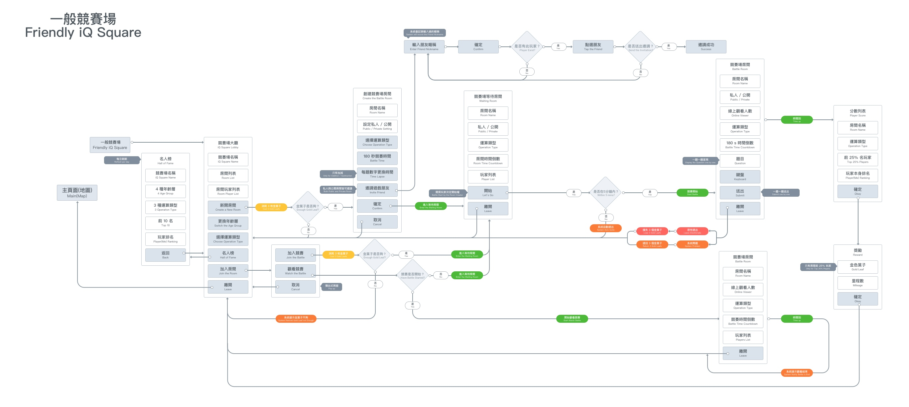
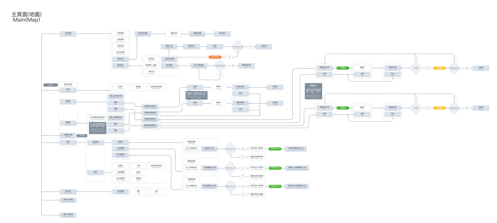

Mental Math App Game
Mental Math App Game is a game based on the mental math which purpose is to keep mental math learner to practice by playing the game. This Project is from the game plan to final UI/UX and visual design.
Flow Chart
There are four section about architecture in this game :
Log in / Sign up and Main
Log in / Sign up of flow chart is to make sure user can have a great experience to join the game.
 Wireframe
Going through ten years, Yilan Young Wind Band have the 10th Anniversary Concert in 2017. We believe ten years is not just the clock tick-tocking. It's more than the time goes by. So we choose "ten years"(拾光) as the theme of the concert in 2017. The Graphic concept is developed from this theme, with the dots as the music note. And all the music instruments gather together as a sphere to present our cohesion and enthusiastic about the music. Some blur dots just like memory that we can seems to grasp but actually we can't.


PMockup
In the hot summer, Yilan Young Wind Band members are all practicing hard to prepare for the Concert. And I use the space which next to the practicing room to build a easy photography studio. The Composition and the colour of the photography is purpose to keep members professional but with the passion and energy with the music.

Icon
Brochure include the introduce about the Yilan Young Wind Band; the order of the composition; introduce about the four conductor; introduce all the members of music instruments part : Flute, Piccolo, Clarinet, Oboe, Saxophone, Trumpet, French Horn, Trombone, Euphonium, Tuba, Percussion, String Bass, Electric Bass and the Piano.

Visual Components
From 2008 to 2017, the teenagers have become the youths; we've grown from childish to sophisticated. The torrent river of time, lasing our dreams and intention but only make it clearer and brighter. The melody always points us back whenever our insists derailed from the bitterness of life. We stand on the stage with our dreams and light ourself with our burning passion. This summer, we will celebrate our first decade of joyful time with music, we will together pay our tribute to the youth.